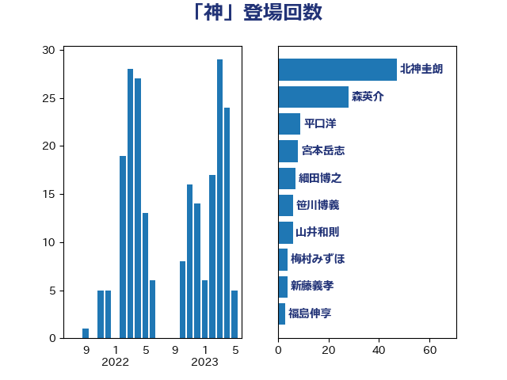

単語「神」

| 北神圭朗 | 無所属 | 47 回 |
| 森英介 | 自由民主党 | 28 回 |
| 平口洋 | 自由民主党 | 9 回 |
| 宮本岳志 | 日本共産党 | 8 回 |
| 細田博之 | 自由民主党 | 7 回 |
| 笹川博義 | 自由民主党 | 6 回 |
| 山井和則 | 立憲民主党 | 6 回 |
| 梅村みずほ | 日本維新の会 | 4 回 |
| 新藤義孝 | 自由民主党 | 4 回 |
| 福島伸享 | 無所属 | 3 回 |
| 玉木雄一郎 | 国民民主党 | 3 回 |
| 根本匠 | 自由民主党 | 3 回 |
| 城井崇 | 立憲民主党 | 3 回 |
| 吉田宣弘 | 公明党 | 3 回 |
| 古賀篤 | 自由民主党 | 3 回 |
| 前川清成 | 日本維新の会 | 3 回 |
| 三木圭恵 | 日本維新の会 | 3 回 |
| 逢坂誠二 | 立憲民主党 | 2 回 |
| 赤羽一嘉 | 公明党 | 2 回 |
| 落合貴之 | 立憲民主党 | 2 回 |
| 稲津久 | 公明党 | 2 回 |
| 熊田裕通 | 自由民主党 | 2 回 |
| 浜地雅一 | 公明党 | 2 回 |
| 柴山昌彦 | 自由民主党 | 2 回 |
| 松本剛明 | 自由民主党 | 2 回 |
| 斉藤鉄夫 | 公明党 | 2 回 |
| 後藤祐一 | 立憲民主党 | 2 回 |
| 寺田静 | 無所属 | 2 回 |
| 古川禎久 | 自由民主党 | 2 回 |
| 仁木博文 | 無所属 | 2 回 |
| 馬場雄基 | 立憲民主党 | 1 回 |
| 関芳弘 | 自由民主党 | 1 回 |
| 鈴木馨祐 | 自由民主党 | 1 回 |
| 足立康史 | 日本維新の会 | 1 回 |
| 赤澤亮正 | 自由民主党 | 1 回 |
| 西村明宏 | 自由民主党 | 1 回 |
| 藤巻健太 | 日本維新の会 | 1 回 |
| 茂木敏充 | 自由民主党 | 1 回 |
| 緒方林太郎 | 無所属 | 1 回 |
| 米山隆一 | 立憲民主党 | 1 回 |
| 篠原豪 | 立憲民主党 | 1 回 |
| 篠原孝 | 立憲民主党 | 1 回 |
| 石橋林太郎 | 自由民主党 | 1 回 |
| 石原正敬 | 自由民主党 | 1 回 |
| 漆間譲司 | 日本維新の会 | 1 回 |
| 末松信介 | 自由民主党 | 1 回 |
| 早稲田ゆき | 立憲民主党 | 1 回 |
| 徳永エリ | 立憲民主党 | 1 回 |
| 市村浩一郎 | 日本維新の会 | 1 回 |
| 山東昭子 | 自由民主党 | 1 回 |
| 山口俊一 | 自由民主党 | 1 回 |
| 小野泰輔 | 日本維新の会 | 1 回 |
| 小西洋之 | 立憲民主党 | 1 回 |
| 寺田学 | 立憲民主党 | 1 回 |
| 宮崎政久 | 自由民主党 | 1 回 |
| 奥野総一郎 | 立憲民主党 | 1 回 |
| 大西健介 | 立憲民主党 | 1 回 |
| 和田有一朗 | 日本維新の会 | 1 回 |
| 務台俊介 | 自由民主党 | 1 回 |
| 前原誠司 | 国民民主党 | 1 回 |
| 仁比聡平 | 日本共産党 | 1 回 |
| 中野英幸 | 自由民主党 | 1 回 |
| 中川康洋 | 公明党 | 1 回 |